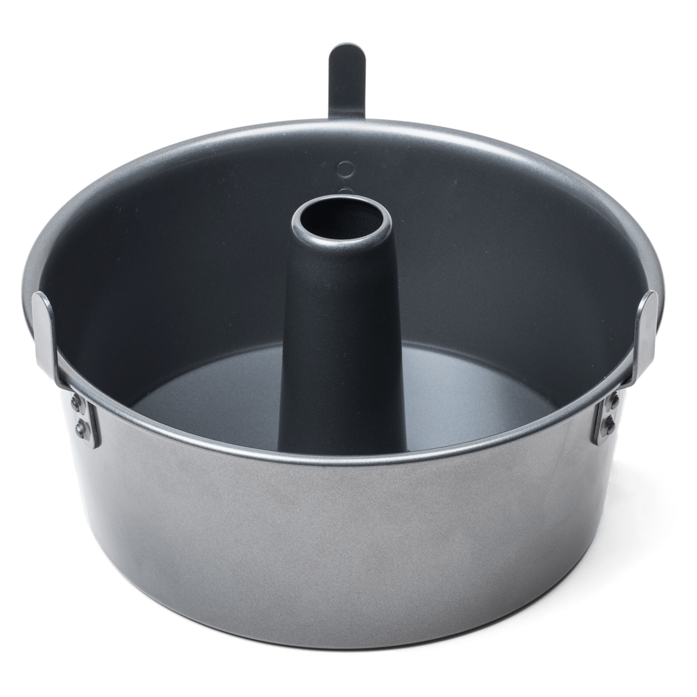

Sour Cream Coffee Cake

Description: A picture of a tube pan
(source: America's Test Kitchen)
Ingredients:
- Batter:
- 2 cups sugar
- 1 cup stick margarine or butter
- 1 tsp vanilla extract
- 2 eggs
- 1 cup sour cream (plain yogurt also works)
- 2 cups flour
- ¼ tsp salt
- 1 tsp baking powder
- Topping:
- 4 tsp sugar
- 1 tsp cinnamon
- 1 cup chopped pecans
Instructions:
- Preheat oven to 350°.
- Cream sugar and margarine together. Add vanilla and eggs.
Add sour cream. Add flour, salt, and baking powder.
- In a separate bowl, mix sugar, cinnamon, and pecans.
- Pour half of batter into a greased and floured tube pan.
Sprinkle half of the topping over batter. Add remaining
batter, and sprinkle on rest of the topping.
- Bake for 1 hour. Cake should spring back when lightly pressed.
Back to Main Page